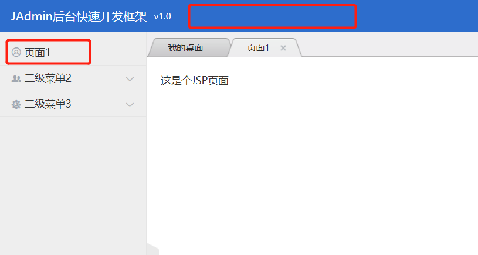

菜单、页面
JAdmin最多支持2级菜单。菜单和页面通过枚举或注解的方式实现，不需要像传统的后台管理系统，在数据库里面一一添加。项目启动时，会自动扫描包，获得菜单和页面。
如上图所示，通过com.jadmin.vo.enumtype.AdminPageMenu枚举类，定义菜单，下面是详细代码：
public enum AdminPageMenu {
menu_1("一级菜单1", "#xe653;"), //#xe653; 是Hui-iconfont的图标代码，可以为空
menu_2("一级菜单2", ""),
menu_1_1(menu_1, "二级菜单1", "#xe705;"),
menu_1_2(menu_1, "二级菜单2", "#xe62b;"),
menu_1_3(menu_1, "二级菜单3", "#xe62e;");
/** 一级菜单 */
private AdminPageMenu menu;
/** 显示标签 */
private String label;
/** 显示样式（这里指的是图标） */
private String css;
/**
* 一级菜单构造器
* @param label
* @param css
*/
AdminPageMenu(String label, String css){
this.label = label;
this.css = css;
}
/**
* 二级菜单构造器
* @param menu 一级菜单
* @param label
* @param css
*/
AdminPageMenu(AdminPageMenu menu, String label, String css){
this.menu = menu;
this.label = label;
this.css = css;
}
}
页面定义，需要在传统Spring MVC 定义URL的@RequestMapping 上添加 @AdminPage注解
@Controller
public class TestController {
@AdminPage(menu = AdminPageMenu.menu_1_1, name = "页面1")
@RequestMapping("/test")
public String test(HttpServletRequest request) {
return "/admin/test";
}
}
“/admin/test”是JSP的路径，系统会自动将“/test”页面注入menu_1_1菜单里面：

AdminPage注解参数详细介绍：
| 参数名称 | 参数类型 | 默认值 | 参数说明 |
|---|---|---|---|
| name | String | 无 | 页面的名字 |
| menu | AdminPageMenu | 无 | 页面所属的菜单，目前只支持二级菜单 |
| only | boolean | false | 该页面是否是菜单唯一的页面，如果是，将不显示页面列表，点击菜单后，直接显示该页面 |
| targetBlank | boolean | false | 弹出到新的标签，如果为true，浏览器将打开新的标签，显示该url |
| hide | boolean | false | 是否隐藏 |
如何实现下图的效果：
不显示一级菜单，需要将一级菜单名字设置为空；
直接将页面作为菜单，需要该菜单下只有一个页面，并且将菜单名字和页面名字设置为一样，或者是使用AdminPage的only属性。